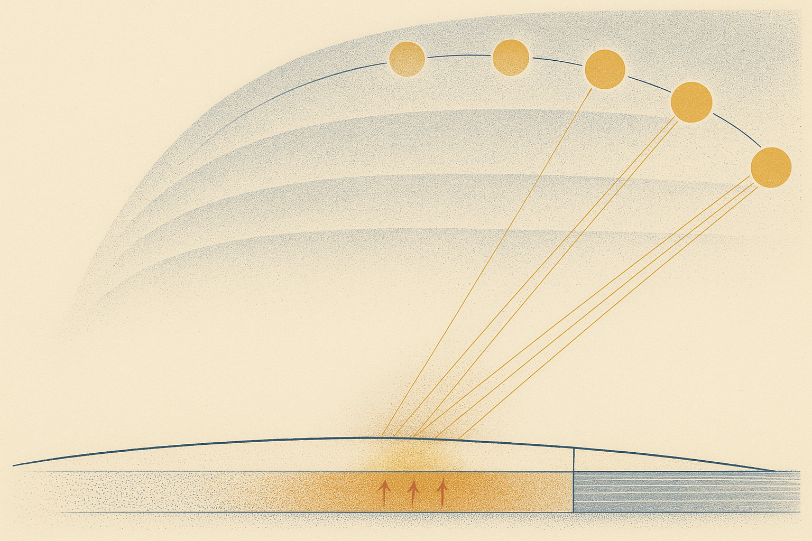
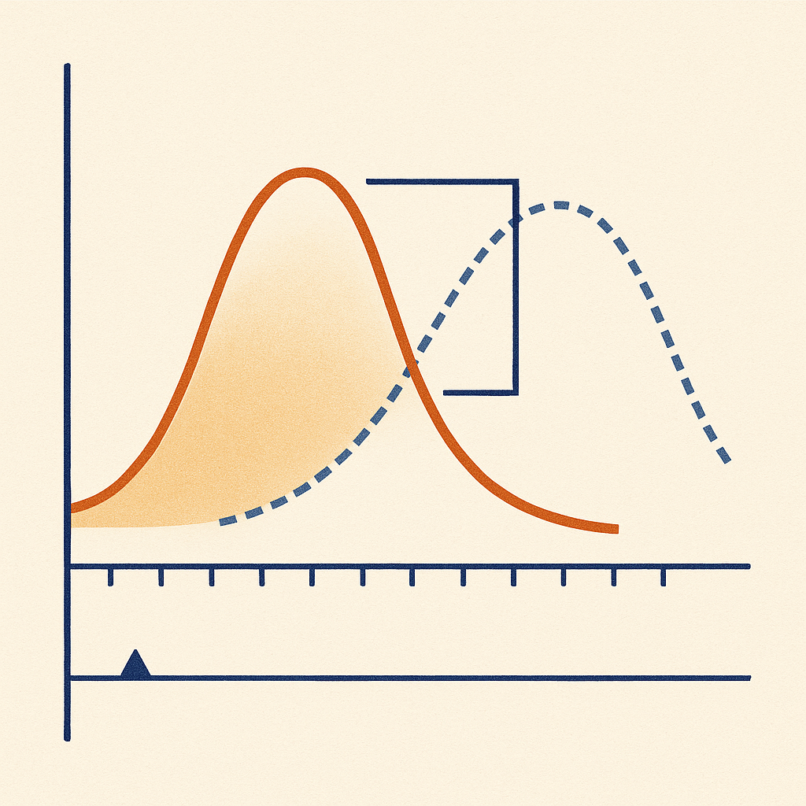
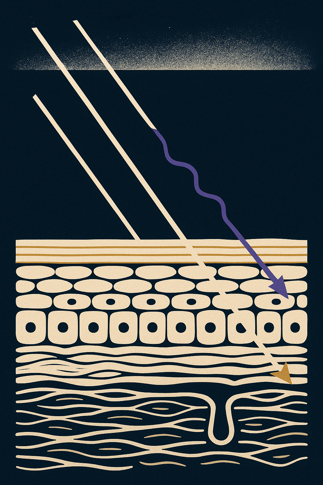

Review below. Reply approve to publish the Facebook post, or tell me edits.

It is 12 degrees at 9am, you are in a jumper, and the UV index has already passed the level where protection is advised. Nothing on your skin can tell you that.
Most of us in Australia decide whether to bother with sun protection by how the air feels on our arms. Cold morning, jumper on, no hat, no sunscreen. It is a reasonable instinct and it is wrong, because temperature and ultraviolet are two different signals that only happen to peak around the same time of year.
Late winter into early spring is exactly where that gap opens widest. Invisible. Unfelt. Forecast anyway.
Temperature is heat you can feel. It comes largely from infrared radiation plus the air temperature around you, and it lags the sun by weeks, because land and ocean act as enormous heat batteries that take time to charge. Heat is stored. Light is not. That is why February is usually warmer than December even though the sun sits higher in December.
Ultraviolet has no thermal cue at all. Nothing on the surface of your skin senses it in the moment. There is no nerve that reports UVB. What you notice hours later is a consequence, not a warning.
The lag is the whole trap. UV tracks the sun's position in the sky almost immediately, while temperature trails behind it. Two signals, different clocks. So the calendar weeks where they disagree most are the weeks where the thermometer gives the worst advice.
Takeaway: the thermometer is measuring yesterday's sun. The UV index is measuring today's.
The technical term is solar zenith angle: how far the sun sits from directly overhead, or in plain terms, how low or high it is in the sky. When the sun is low, its light crosses a long slant path through the atmosphere. When it is high, the path is short.
That matters because the atmosphere does not treat all ultraviolet equally. The shorter, more energetic UVB wavelengths (roughly 280 to 315 nm) are scattered and absorbed far more readily along that path than the longer UVA wavelengths (315 to 400 nm). Lengthen the path and UVB gets preferentially stripped out. Raise the sun a few degrees and the path shortens, so proportionally far more UVB reaches the ground.
Think of a torch shone straight down through a fish tank versus shone at a shallow angle across it. Same torch, same water, wildly different amount of light out the other side.
This is why UVB swings hard by season and by hour, while UVA is comparatively steady across the year and across the day. It also explains why Australian UV readings behave the way they do: Gies and colleagues measured Australian UV index levels running substantially above comparable UK measurements, a difference driven by latitude, ozone and sun angle rather than by anything you can feel on your skin.
Takeaway: a few degrees of sun angle changes your exposure far more than a few degrees of air temperature.
The UV index is a scale of biologically effective ultraviolet at ground level. "Biologically effective" means the raw measurement is erythemal weighted, which simply means each wavelength is counted according to how strongly it reddens skin, so the number reflects effect rather than raw energy.
In Australia it is forecast hourly for every postcode by the Bureau of Meteorology and ARPANSA, and it is free in the SunSmart app. Sun protection is advised whenever it reaches 3 or above.
The useful behaviour change is small. Instead of guessing from the thermometer, check the daily UV alert window: the hours forecast at 3 or above. Through late August and September that window widens week by week while the mornings still feel cold. Public understanding of the index is patchier than you would expect. Carter and Donovan found many people misread it as a temperature-like measure or a heat proxy rather than a protection trigger.
No phone handy? Use the shadow rule. If your shadow is shorter than you are, the sun is high enough to matter.
Takeaway: 3 is the switch, and it is free to look up.
Cloud scatters and diffuses ultraviolet rather than reliably removing it. Broken cloud can even raise ground-level UV locally, as light reflects off cloud edges onto a patch of sky that is still clear. Overcast is not a zero.
Glass is the second one. Ordinary window glass blocks most UVB but transmits a large share of UVA, and not all car glass is equal. Boxer Wachler measured roughly 96% UVA blockage in laminated windscreens against roughly 71% in side windows. That is a meaningful difference for anyone who commutes, drives for work, or sits at a desk by a window.
Takeaway: a cold, overcast day beside a window is not an exposure-free day.
Ambient UV is what falls on the ground. Personal dose is what actually reaches you. Diffey's work on time and place as modifiers of personal exposure makes the point plainly: what you receive is governed by where you are and when, not by the season alone.
The most counterintuitive version of this comes from an Australian occupational study. Downs and colleagues measured personal exposure in classroom teachers in tropical north Queensland and found mean daily personal exposure was higher in winter than in summer. Not because winter sun is stronger, but because in summer heat people move indoors and into shade. Behaviour sets the dose.
Which is also the long-run story. Lemus-Deschamps and Makin, tracking fifty years of Australian UV index change, frame exposure as an accumulated quantity rather than a series of isolated bad days.
Takeaway: the season does not set your dose. Your day does.
Nothing here is about doing more. It is about swapping one input for a better one: a forecast number in place of a feeling. Protection first, always, for the hours the index says so.
None of this is what a light mask is for. If you already use one in the evening, a closer look is here (a cosmetic device, not medicine, and never a substitute for sun protection).
Hashtags: #uvindex #sunsmart #skinscience #skinhealth #australianskincare #skinlongevity #springskincare

It is still cold in the mornings. That is the part that fools everyone.
Temperature and UV are two separate signals that happen to peak around the same time of year. Heat lags the sun by weeks, because land and water store it. UV does not lag at all. It tracks the sun's angle.
The mechanism: a low sun sends its light on a long slant through the atmosphere, so most of the shorter UV scatters out before it lands. Lift that angle a few degrees, the path shortens, and far more arrives. From late August the alert window widens week by week while the air still feels like winter.
The free measuring stick: the Bureau and ARPANSA forecast a UV index for every Australian postcode, hourly. Sun protection is advised from 3 and up.
- Check the forecast window, not the thermometer.
- Treat 3 as the switch, not 30 degrees.
- No phone handy? If your shadow is shorter than you are, the sun is high enough to count.
- Remember the window side of your face, at the desk and in the car.
Screenshot this before your next cold, sunny morning.
The two false negatives are the ones that catch people out. Cloud scatters UV rather than reliably removing it, and ordinary glass stops most UVB while letting a lot of UVA through (car side windows are considerably weaker than the windscreen). So a cold, overcast day next to a window reads as a zero and is not one.
And the counterintuitive part: personal exposure is not the same as ambient exposure. Measurement work in Australia has found winter personal dose can run higher than summer, because in the heat people go indoors and into shade. Behaviour sets the dose, not the calendar.
Sources in comments.
Be honest: thermometer or UV app? One word.
**Hashtags:** #SkinScience #UVIndex #SunSmart #AustralianSkin #SkinLongevity
**First comment:** Full spec: https://redermis.com.au/products/red-light-therapy-face-neck-mask (a cosmetic device, not medicine, and no substitute for sun protection).

**Slide 1:** Your skin cannot feel UV. That is the entire problem.
**Slide 2:** Heat lags the sun by weeks, because land and water store it. UV does not lag at all. Two signals, different clocks.
**Slide 3:** A low winter sun means a long slant through the atmosphere, so most of the short UV scatters away before it reaches you. Raise that angle by a few degrees and far more of it lands.
**Slide 4:** From late August, the daily window at UV 3 and above gets longer every single week, while the mornings still feel like winter.
**Slide 5:** The shadow rule, for when you have no phone. If your shadow is shorter than you are, the sun is high enough to count.
**Slide 6:** The glass myth. Ordinary glass stops most UVB and lets plenty of UVA through, and car side windows are much weaker than the windscreen. A cold day beside a window is not a zero day.
**Slide 7:** Cloud scatters UV. It does not reliably remove it. Cloudy is not the same as safe.
**Caption:**
Your skin cannot feel UV. That is the entire problem.
Heat lags the sun by weeks. UV does not. It tracks the sun's angle, so from late August the daily window at UV 3 and above widens every week while the mornings still feel like winter.
The free tool most people forget: the hourly UV forecast for your postcode. Protection from 3 up. BoM and ARPANSA data, no app subscription, no guessing.
Cloud scatters UV rather than removing it. Ordinary glass stops most UVB and passes plenty of UVA. Neither one is a zero.
Thermometer or UV app? One word.
(A cosmetic device, not medicine.) Closer look at the ten-minute evening ritual side of things is in bio.
Save this one for September.
**Hashtags:** #uvindex #sunsmart #skinhealth #australianskin #skinscience #skincaretips #skinlongevity #uvprotection #springskincare #springskin
**Title:** UV Index vs Temperature: Why a Cold, Cloudy Morning Still Counts
**Description:** Temperature tells you how to dress. The UV index tells you what your skin is exposed to. A low sun sends light on a long slanted path through the atmosphere and most short-wavelength UV scatters out. As the sun climbs, that path shortens and far more arrives, which is why the index rises from late winter into spring while the air still feels cold. Cloudy is not the same as safe. Protection is advised from UV 3 up. No phone? If your shadow is shorter than you are, the sun is high enough to count.
**CTA:** If you are curious, a closer look is here: https://redermis.com.au/products/red-light-therapy-face-neck-mask
**Pin link:** the blog article, "UV Index vs Temperature: Why Cool, Cloudy Spring Days Still Reach Your Skin".
**Hashtags:** #UVIndex #SkincareTips #SunProtection #SpringSkincare #AustralianSkincare
**Image:** reuses the Instagram image (instagram.png), generated at 1024x1536 so it sits at Pinterest's native 2:3. No separate Pinterest image is generated.